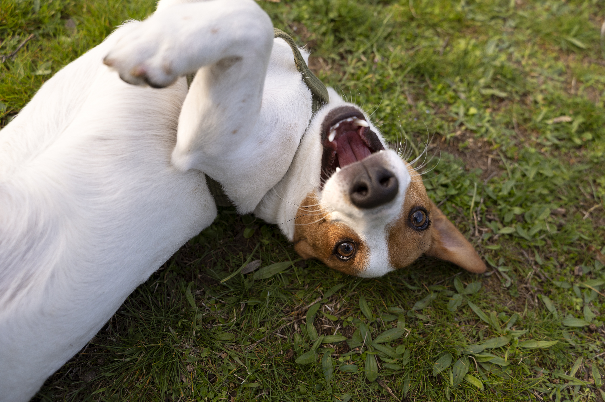

ทุกครั้งที่อาบน้ำให้สุนัขเสร็จ ยังไม่ทันหยิบผ้าเช็ดตัว เขาก็พุ่งไปที่พรม เริ่มไถหน้า ไถหลัง กลิ้งไปมา เหมือนตั้งใจจะลบทุกอย่างที่เพิ่งทำไปทิ้ง ส่วนเวลาพาเดินเล่น บางวันก็เจอเขาก้มดม แล้วทิ้งไหล่ลงไปกลิ้งบนจุดที่มีกลิ่นแปลก ๆ อย่างมีความสุขสุด ๆ
คำถามว่า “ทำไมหมาชอบเอาตัวไถพื้น” เป็นคำถามที่เจ้าของถามบ่อยมาก และคำตอบที่ตรงที่สุดคือ — ขึ้นอยู่กับว่าเขาไถแบบไหน ไถเมื่อไร และไถบ่อยแค่ไหน เพราะพฤติกรรมที่ดูเหมือนกันจากภายนอก อาจมาจากเหตุผลที่ต่างกันโดยสิ้นเชิง ตั้งแต่ความสนุก การสื่อสารด้วยกลิ่น ไปจนถึงสัญญาณว่าร่างกายกำลังไม่สบาย
เหตุผลที่ตรงไปตรงมาที่สุดคือ อาการคัน สุนัขไม่มีมือไว้เกาหลัง พื้นหญ้า พรม หรือพื้นผิวหยาบ จึงเป็นเครื่องมือเกาตามธรรมชาติ มักดูเป็นจังหวะ ไถซ้ำ ๆ ที่จุดเดิม หากนาน ๆ ครั้งก็มักปกติ แต่ถ้าเริ่มถี่ขึ้น อาจเกี่ยวกับ:
พฤติกรรมที่ทำให้เจ้าของปวดหัวที่สุด — สุนัขเจอซากสัตว์ มูลสัตว์ หรือของกลิ่นแรง แล้วเลือกจะ “ใส่” กลิ่นนั้นไว้บนตัว โดยมักเริ่มจากไหล่หรือคอก่อน นักพฤติกรรมศาสตร์ยังไม่มีข้อสรุปแน่ชัด แต่มีสมมติฐานที่พูดถึงบ่อย ได้แก่:
สิ่งสำคัญคือ นี่ไม่ใช่การดื้อหรือการท้าทายเจ้าของ เขาแค่ทำตามสิ่งที่สัญชาตญาณและสิ่งแวดล้อมให้รางวัลกับเขา
ฉากที่เห็นบ่อยที่สุดคือวิ่งพล่าน กลิ้งไปมา ไถหน้ากับพรมหรือโซฟาหลังอาบน้ำ ซึ่งอาจอธิบายได้จากหลายปัจจัยร่วมกัน:
จากประสบการณ์สอนเจ้าของหลายบ้าน สุนัขที่มีประสบการณ์ดีกับการอาบน้ำ (ได้รางวัล ได้ควบคุมจังหวะ ไม่ถูกบังคับ) มักพุ่งพล่านหลังอาบน้ำน้อยลง สอดคล้องกับแนวคิดว่าส่วนหนึ่งของพฤติกรรมนี้มาจากการระบายความเครียด
สุนัขมีต่อมกลิ่นกระจายหลายจุดบนร่างกาย การไถตัวกับพื้น ผ้าห่ม หรือที่นอน โดยเฉพาะจุดที่เจ้าของเพิ่งนั่งหรือนอน อาจเป็นการผสมกลิ่นของตัวเองเข้ากับกลิ่นของคนที่เขาผูกพัน หลายบ้านสังเกตว่าสุนัขชอบกลิ้งบนเสื้อผ้าที่เพิ่งถอด หรือบนเตียงทันทีที่เจ้าของลุก — มักไม่ใช่ปัญหา และอาจสะท้อนว่าเขารู้สึกสบายใจกับพื้นที่และคนในบ้าน
บางครั้งคำตอบก็ง่ายกว่าที่คิด — มันรู้สึกดี การนอนหงาย บิดตัว ไถหลังกับหญ้านุ่ม ๆ ช่วยยืดกล้ามเนื้อ และกระตุ้นความรู้สึกผ่อนคลาย สุนัขที่ไถตัวเพราะความสุขมักมีภาษากายผ่อนคลาย: ปากเปิดสบาย ลิ้นห้อย ตานุ่ม หางแกว่งช้า ๆ ลำตัวไม่เกร็ง และหยุดเองได้ไม่นาน ในอากาศร้อนแบบบ้านเรา บางตัวยังชอบนอนไถกับพื้นกระเบื้องเย็น ๆ เพื่อระบายความร้อนด้วย
มุมที่เจ้าของหลายคนมองข้าม — พฤติกรรมที่ได้รับผลตอบแทน มีแนวโน้มจะเกิดซ้ำ ถ้าทุกครั้งที่สุนัขนอนหงายไถพื้น เราหัวเราะ เข้าไปเกาพุง หรือถ่ายวิดีโอพร้อมชมเสียงดัง สุนัขอาจเรียนรู้ว่าพฤติกรรมนี้ทำให้ได้รับความสนใจ นี่ไม่ใช่เรื่องผิด และไม่ใช่การ “บงการ” เจ้าของ แต่เป็นการเรียนรู้ตามธรรมชาติ
ข่าวดีคือ หลักการเดียวกันนี้คือสิ่งที่เราใช้ในการฝึกแบบเสริมแรงทางบวก — เราเลือกได้ว่าจะให้รางวัลกับพฤติกรรมไหน
พฤติกรรมนี้ต่างจากการกลิ้งหรือไถหลังอย่างชัดเจน สุนัขจะนั่งลง ยกขาหน้าเล็กน้อย แล้วใช้ขาหน้าลากตัวไปข้างหน้าโดยให้ก้นถูกับพื้น สาเหตุที่พบบ่อยคือ ปัญหาต่อมข้างก้น (anal sac) ซึ่งอาจอุดตัน อักเสบ หรือติดเชื้อ ทำให้ไม่สบาย นอกจากนี้ยังอาจเกี่ยวกับพยาธิ ภูมิแพ้ ท้องเสีย หรือสิ่งแปลกปลอมติดบริเวณขนรอบก้น
| ลักษณะ | มีแนวโน้มปกติ | ควรสังเกต / พบสัตวแพทย์ |
|---|---|---|
| ความถี่ | นาน ๆ ครั้ง มีจังหวะชัดเจน (หลังอาบน้ำ, ในสนาม) | บ่อยขึ้นเรื่อย ๆ โดยไม่มีตัวกระตุ้นชัดเจน |
| ภาษากาย | ผ่อนคลาย ร่าเริง หยุดเองได้ | เกร็ง กระวนกระวาย หยุดไม่ได้ |
| ผิวหนัง/ขน | ปกติ | แดง ร่วง มีสะเก็ด มีกลิ่น |
| พฤติกรรมร่วม | วิ่งเล่น ขอเล่นต่อ | เลีย กัด เกาตัวเองซ้ำ ๆ ลากก้น |
แทนที่จะดุหรือลงโทษ ซึ่งอาจทำให้สุนัขสับสนและเสียความสัมพันธ์ ลองมองว่า นี่คือทักษะที่ยังไม่ได้สอน ไม่ใช่ความดื้อ
การที่สุนัขเอาตัวไถพื้นไม่ได้มีคำตอบเดียว อาจเป็นการเกาที่คัน การสื่อสารด้วยกลิ่น การระบายพลังงานหลังอาบน้ำ ความสุขธรรมดา ๆ หรืออาจเป็นสัญญาณของปัญหาสุขภาพ หน้าที่ของเราคือ สังเกตบริบท อ่านภาษากาย และแยกให้ออกว่าแบบไหนคือความสุข แบบไหนคือความไม่สบาย
เมื่อเข้าใจเหตุผลเบื้องหลัง เราจะตอบสนองได้ตรงจุด — ปล่อยให้เขาสนุกเมื่อเป็นเรื่องปกติ ช่วยเหลือเมื่อเขาไม่สบาย และสอนทักษะใหม่ด้วยความเข้าใจ แทนการลงโทษ
บทความนี้เป็นข้อมูลเพื่อความรู้ทั่วไป หากสุนัขของคุณมีพฤติกรรมไถตัวหรือลากก้นบ่อยผิดปกติ หรือมีอาการทางผิวหนังร่วมด้วย ควรพาไปพบสัตวแพทย์เพื่อตรวจหาสาเหตุทางสุขภาพก่อนเสมอ และหากต้องการเริ่มฝึกทักษะการควบคุมตัวเองหรือการเรียกกลับ แนะนำให้ปรึกษาทีมผู้เชี่ยวชาญของ DogBooster ก่อนเริ่มโปรแกรมการฝึก เพื่อให้ได้แผนที่เหมาะกับสุนัขของคุณ